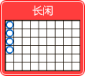

Menu
百家乐玩法:
荷官会按照"闲""庄""闲""庄"顺序依次派出"庄家"和"闲家"两份牌，如果需要补牌，将依照以下补牌规则多发一张牌点数， 得9点或接近9点的一家胜出。任何一家拿到"例牌"，牌局就算结束，不再补牌。
补牌规则
| 闲家头两张牌 |
闲家 |
庄家头两张牌
|
庄家 |
| 合计点数 |
合计点数 |
| 0 |
必须补牌 |
0 |
必须补牌 |
| 1 |
必须补牌 |
1 |
必须补牌 |
| 2 |
必须补牌 |
2 |
必须补牌 |
| 3 |
必须补牌 |
3 |
若闲家补得第三张牌是8，不得补牌 |
| 4 |
必须补牌 |
4 |
若闲家补得第三张牌是0,1,8,9，不得补牌 |
| 5 |
必须补牌 |
5 |
若闲家补得第三张牌是0,1,2,3,8,9，不得补牌 |
| 6 |
不得补牌 |
6 |
若闲家补得第三张牌是6,7，必须补牌 |
| 7 |
不得补牌 |
7 |
不得补牌 |
| 8 |
例牌，即定输赢 |
8 |
例牌，即定输赢 |
| 9 |
例牌，即定输赢 |
9 |
例牌，即定输赢 |
百家乐
| 项目 |
赔率 |
输赢条件 |
| 免佣庄 |
1:1 |
牌局结束后，点数大于闲家 (如庄以6点取胜，则赔一半；开和局时退回下注金额) |
| 庄 |
1:0.95 |
牌局结束后，点数大于闲家 |
| 闲 |
1:1 |
牌局结束后，点数大于庄家 |
| 和 |
1:8 |
牌局结束后，庄闲点数一样,开和局时退回下注金额. |
| 庄对子 |
1:11 |
庄的第一和第二张牌面值一样，不计花色 |
| 闲对子 |
1:11 |
闲的第一和第二张牌面值一样，不计花色 |
| 大 |
1:0.5 |
牌局结束后，庄闲共有五或六张牌(30局后不能投注大小) |
| 小 |
1:1.5 |
牌局结束后，庄闲共有四张牌(30局后不能投注大小) |
注意事项
本网站为真人即时视像设置，若有发生特殊情况将依照本网站公告之办法处理。
洗牌中途如有牌只不慎掉落台底或是离开镜头范围，则监场将即时另取新牌更换,重新洗牌。
派牌中途，荷官不慎拉出2或3张阴牌，则由监场按照正确位置给予更正。
如不需博牌，但荷官又拉多一张牌，则由监场将此牌放置在牌靴底下做为下一局销牌，然后牌局照旧进行。
如牌局没有销牌,而牌已开启2张或以上(可以看见牌面),则该局将会取消,并更换新靴.
在游戏过程中，如果有一张牌发现在鞋盒翻开 ，则该牌和所有的赌注都视为有效，并继续正常游戏，但是，如果游戏中有提供保险，则保险无效。
在游戏过程上，如果荷官忘记提供保险卡，扫描下暴露了卡，我们将视为保险无效和丧失，游戏将继续正常运行。
在游戏过程中，如果荷官忘记扫描卡，导致在位置上错误。我们将重新安排闲和庄初始牌，无效保险，游戏将继续正常运行。
本网站为真人现场操作，若有操作失误，请各位会员见谅。
龙虎玩法:
龙虎游戏是非常简单的赌场游戏，本游戏中龙为闲家第一张牌，虎为庄家第一张牌，根据牌面点数既定输赢，不计花色。 牌面点数以A为最小，K为最大，点数大者获胜，牌面点数大小顺序：K Q J 10 9 8 7 6 5 4 3 2
A。点数相同则为和，没有输赢。
| 项目 |
赔率 |
输赢条件 |
| 龙 |
1:1 |
龙为闲家第一张牌 |
| 虎 |
1:1 |
虎为庄家第一张牌 |
| 和 |
1:8 |
牌局结束后，庄闲点数一样 |
| 龙单 |
1:0.75 |
龙为闲家第一张牌 |
| 龙双 |
1:1.05 |
龙为闲家第一张牌 |
| 龙红 |
1:0.9 |
龙为闲家第一张牌 |
| 龙黑 |
1:0.9 |
龙为闲家第一张牌 |
| 虎单 |
1:0.75 |
虎为庄家第一张牌 |
| 虎双 |
1:1.05 |
虎为庄家第一张牌 |
| 虎红 |
1:0.9 |
虎为庄家第一张牌 |
| 虎黑 |
1:0.9 |
虎为庄家第一张牌 |
规则
注意：每靴30局后（即31局开始），不接受单、双、红、黑等区域投注。
龙为闲家的第一张牌。虎为庄家的第一张牌。
牌面点数从小到大为A、2、3、4、5、6、7、8、9、10、J、Q 、K，不分花色。
龙和虎的赔率都是1:1, 下和的赔率是1:8。
出现和局时，下注龙或虎的赌金要被吃一半。
注意事项
本网站为真人即时视像设置，若有发生特殊情况将依照本网站公告之办法处理。
洗牌中途如有牌只不慎掉落台底或是离开镜头范围，则监场将即时另取新牌更换,重新洗牌。
派牌中途，荷官不慎拉出2或3张阴牌，则由监场按照正确位置给予更正。
如不需博牌，但荷官又拉多一张牌，则由监场将此牌放置在牌靴底下做为下一局销牌，然后牌局照旧进行。
如牌局没有销牌,而牌已开启2张或以上(可以看见牌面),则该局将会取消,并更换新靴。
牌局中途牌靴内之牌张偶有阳反，阳反之牌及该局之投注仍然有效，牌局继续进行。
本网站为真人现场操作，若有操作失误，请各位会员见谅。
轮盘玩法:
简介:
本游戏是采用国际标准的单零轮盘，单零轮盘上共有37 个细长沟道。其中一个绿色沟道的数字编号为0，另外36个沟道分别编号为1 至36，一半是红色一半是黑色。 玩家可以买单一数字或赌桌上的数字组合。
如何胜出:
下注结束后，荷官会把轮盘向一个方向转动，然后把象牙制滚球抛到轮盘的外侧，让滚球在轮盘内至少转五周才为有效的游戏，并降落在其中一个细沟内为该局结果，如果滚球转动不过五周现场会重新开始滚球。
操作及下注指南:
1. 开始新局后，即开始下注倒数计时，请玩家在桌面不同的方格内或方格的边界上押放筹码。
2. 倒数结束前由荷官转动轮盘，并抛出滚球。
3. 由荷官输入结果数字，同时玩家画面显示结果。
游戏规则:
筹码放在划有不同投注项目的方格的赌桌上，你可以下注在任何的方格，但要在下注时限之内押注。
投注方式及派彩赔率:
轮盘的投注方式有 12个种类，各项投注类型与派彩赔率如下:
| 投注项目 |
说明 |
赔率 |
| 直接注 |
1个号码（投注包括 0在内的任意一个数位。下注时将筹码放到那个数位的中心） |
1 ：35 |
| 分注 |
2个号码（投注于两个号码之间的格线上 。如2和3） |
1 ：17 |
| 街注 |
3个一列的数（投注三个号码。将筹码押在轮盘桌上有三个数位那一列右侧的那条边线上） |
1 ：11 |
| 三数 |
0,1,2（投注于 0, 1, 2交接区域）或0,2,3（投注于0, 2, 3的交接区域） |
1 ：11 |
| 角注 |
4个数交叉（将筹码放到四个数位方框交差的那个角区） |
1 ：8 |
| 四个号码 |
0,1,2,3（将筹码放到 0和3交线的右侧以下注数位 0, 1, 2 和3）
|
1 ：8 |
| 线注 |
两列相交的顶部（将筹码下注到两列相交的最顶部的交点处（虚拟桌右侧），6个数字） |
1 ：5 |
| 行注 |
每行12个号码（桌上每行数位底部都有带'第*行 ' 字样的方框，12个号码，不含零） |
1 ：2 |
| 下注一打 |
将筹码下到有 "第一打"，"第二打"和"第三打"字样的赌区以同时下注 12个数位。
(分别为1-12、13-24及25-36) |
1 ：2 |
| 红色 / 黑色 |
投注开奖号码为红色或黑色。若开0则通杀 |
1 ：1 |
| 双数 / 单数 |
投注开奖号码为单数或双数。若开0则通杀 |
1 ：1 |
| 大 / 小 |
小（1-18）；大（19-36）；若开0则通杀 |
1 ：1 |
法式下注:
法式下注：以椭圆形画出轮盘上的分区（号码、颜色），而后根据玩法不同分隔为4个分区（轮盘下角注、轮上孤注、零旁注上角、轮上零旁），法式下注提供5种投注种类
投注方式：使用筹码点击"法式下注"的椭圆形轮盘对应的玩法，轮盘投注桌上显示每个玩法投注的筹码，点击确定时将所选玩法提交下单。
| 投注项目 |
说明 |
投注类型 |
| 轮上零旁 |
7 |
直注：0 ； 3； 12 ； 15； 26； 32 ； 35 |
| 零旁注上角 |
17 |
直注：0; 2; 3; 4; 7; 12; 15; 18; 19; 21; 22; 25; 26; 28; 29 ; 32; 35
|
| 轮上孤注 |
8 |
直注：1；6；9；14；17；20；31；34 |
| 轮盘下角注 |
12 |
直注：5；8；10；11；13；16；23；24；27；30；33；36 |
请注意:
• 桌台限红是本游戏桌台主要玩法的最小、最大玩法限红。玩家在每个玩法的可押注限额是玩法限红与玩家个人限红的交集。
• 荷官在游戏进行中若把球掷出轮盘外，或轮盘停止运转等因素则该局游戏必将重新进行掷球。如遇故障因素将注销所有相关注单/派彩。
• 如遇结算错误，按照当期视频结果重新结算。
骰宝玩法:
骰宝也叫赌大小，是中国古老相传的游戏。这个游戏的用具是个密封的骰盅，由各玩家选择筹码下注，猜测经机械摇动后骰子开出的点数或是点数总和。
游戏玩法
- 开始新局后即开始下注倒数计时，您可以依照您的猜测，选择筹码下注 。
- 倒数时间结束后停止下注，再由荷官按钮经机械自动摇骰。
- 待骰盅停止后，视三颗骰子停留开出的点数，由荷官输入三点数，同时画面亮起灯光，可清楚看到胜出注码和赔率；是否与玩家押注的内容相同，来判定输赢。
- 如遇到斜骰和叠骰时,荷官将重摇骰,直到能够完整判读。
- 如遇到骰盅跳动少于三次,荷官将重摇骰。
投注种类
- 筹码是放在划有不同赌法的方格的赌桌上，您可以下注在任何的方格，但要在下注时限之内押注。
派彩
| 下注 |
说明 |
赔率 |
| 大 / 小 |
大 : 总点数为 11 至 17 ( 遇围骰庄家通吃 )
小 : 总点数为 4 至 10 ( 遇围骰庄家通吃 )
|
1 赔 1 |
| 围骰 |
投注指定的围骰 ( 如 1 围骰 ) ，一定开出 3 颗所投注的骰子 |
1 赔 180 |
| 全围 |
3 颗骰子都一样 |
1 赔 30 |
| 下注在单一个点数 ( 三军 ) |
| 出现单骰 |
投注每颗骰子 1 至 6 中指定的点数，点数出现 1 次 |
1 赔 1 |
| 出现双骰 |
投注每颗骰子 1 至 6 中指定的点数，点数出现 2 次 |
1 赔 2 |
| 出现全骰 |
投注每颗骰子 1 至 6 中指定的点数，点数出现 3 次 |
1 赔 3 |
| 对子 ( 双骰、长牌 ) |
投注指定的双骰 ( 如双 1 点 ) ，至少开出 2 颗所投注的骰子 |
1 赔 10 |
| 牌九式 ( 骨牌、短牌 ) |
投注 15 种 2 颗骰子可能出现的组合 ( 如 1 ， 2) |
1 赔 5 |
| 点数总和 |
| 4 或 17 点 |
总和为 4 或 17 点 |
1 赔 60 |
| 5 或 16 点 |
总和为 5 或 16 点 |
1 赔 30 |
| 6 或 15 点 |
总和为 6 或 15 点 |
1 赔 17 |
| 7 或 14 点 |
总和为 7 或 14 点 |
1 赔 12 |
| 8 或 13 点 |
总和为 8 或 13 点 |
1 赔 8 |
| 9, 10, 11, 或 12 |
总和为 9 ， 10 ， 11 或 12 点 |
1 赔 6 |
| 单 / 双 |
| 单 |
总点数为 5, 7, 9, 11, 13, 15, 17 点 ( 遇围骰庄家通吃 ) |
1 赔 1 |
| 双 |
总点数为 4, 6, 8, 10, 12, 14, 16 点 ( 遇围骰庄家通吃 ) |
1 赔 1 |
其他补充说明
- 如遇故障因素将注销所有相关注单/奖金
- 此游戏之玩家获利率约为 95.52%
好路详解:
长庄
定义：在大路中连续有4个或4个以上的庄就称之为"长庄"
例子
长闲

定义：在大路路子中，连续有4个或4个以上的闲，就称之为"长闲"。
例子
一闲两庄
定义：在大路路子中，闲庄庄连续出现两次或以上，就称之为"一闲两庄"。
例子
一庄两闲
定义：在大路路子中，庄闲闲连续出现两次或以上，就称之为"一庄两闲"。
例子
大路单跳
定义：在大路路子中，庄闲梅花间竹地出现，就称之为"大路单跳"。
例子
大路双跳
定义：在大路路子中，两个庄闲连环追逐地出现，（庄闲开头不限）连续4次或4次以上，就称之为“大路双跳”。。
例子